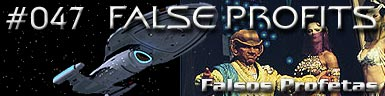
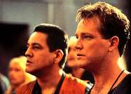
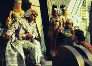
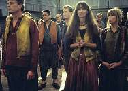
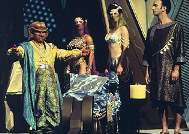
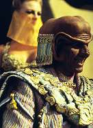

|
Voyager
Temporada 3

Anlise do episdio por
Daniel Sasaki



|
MANCHETE
DO EPISDIO Data Estelar: 50074.3  Quando retornam para a nave, Paris e Chakotay descobrem que os vigaristas Ferengis, Koll e Arridor, chegaram ao quadrante Delta sete anos antes, vtimas de uma tentativa de tomar posse de uma anomalia pouco segura. Sem meios de voltar para casa, eles se estabeleceram no planeta primitivo e tomaram proveito de um mito local que previa a chegada de "seres sagrados". Descontente com a explorao daquela sociedade, Janeway traz os Ferengis a bordo. Contudo, ela os manda de volta quando eles a convencem do caos que o desaparecimento deles causaria no planeta.  S resta uma cartada para a tripulao. Lembrando-se das profecias mticas de que os deuses iro embora em "asas de fogo" aps a chegada de um peregrino sagrado, Neelix diz ser o enviado. A tripulao dispara trs exploses de torpedos para tornar verdadeira uma passagem da profecia, que dizia que os deuses desaparecero quando trs estrelas novas aparecerem no cu. 
O episdio comea com uma premissa aparentemente muito boa. Os roteiristas retomam um evento mostrado sete anos antes, em "The Price", durante o terceiro ano de A Nova Gerao. Os atores convidados so os mesmos, o que garante a continuidade da histria. A proposta antropolgica no qual se sustenta o enredo interessante, pois h uma ligeira modificao com relao ao que se costuma esperar dos episdios do estilo "Eram os Deuses Astronautas?". Normalmente, de se esperar que a chegada dos aliengenas a um planeta tecnologicamente inferior desperte nos nativos novas lendas, mitos e religies. Aqui acontece diferente: a chegada dos Ferengis no cria uma nova religio, mas se encaixa perfeitamente nas profecias locais, causando um impacto na cultura local bem menor do que poderia ter sido. O segmento mostra o quanto profecias podem ser frgeis e manipuladoras. No toa que muita gente explica os acertos de Michel de Nostradamus com a capacidade de retorcermos a interpretao de suas profecias para que ela se encaixe aos fatos estabelecidos. Aqui temos uma viso do que isso pode ocasionar, em uma metfora mais intensa e grosseira. Tirando essa questo filosfica, vale a pena falar de outros dois pontos altos na histria; a atuao do elenco e o humor, presente em qualquer roteiro que envolva os Ferengis. Neelix fez um timo Grande Proxy, ou Grande Procurador. Vale lembrar que Ethan Phillips j havia interpretado um Ferengi anos antes.  A explicao est no bom e velho "para salvar a espcie nativa". S que esse gesto de generosidade comprometeu mais uma vez a misso primria da Voyager, que voltar para casa. Sinceramente, o modo como Janeway e o resto da tripulao lidaram com tudo isso deixou muito a desejar, a comear por Neelix. A farsa do mensageiro oficial era uma ttica perfeita, at o Talaxiano se desesperar e contar toda a verdade aos Ferengis. Neelix e todos os outros acabaram sabotando toda a misso.  bvio que no se esperava um retorno imediato da Voyager para o quadrante Alfa. incio de temporada, do terceiro ano. Ento, introduzir a tal Fenda Espacial e apresentar um modo de voltar para casa durante 44 dos 45 minutos do episdio um desperdcio, pois todos j sabem que aquilo no vai dar certo. De certa forma, esse sempre o problema quando se apresenta Voyager uma possibilidade real de voltar para casa; sabemos que no vai dar certo. Os roteiristas deviam, portanto, abandonar essas "possibilidades" enquanto premissas de histrias. Toda vez que eles o fazem, impossvel evitar decepes. Outra questo a ser debatida aqui
o perigo, para a srie, de trazer elementos j familiares ao pblico.
O risco de contaminao ou contradio do que j foi
estabelecido muito grande (como veremos mais adiante, com o
tratamento dado aos Borgs). Felizmente, com relao a isso,
nesse episdio os roteiristas acertaram tudo direitinho. Se "False
Profits" no um episdio particularmente interessante
para Voyager, uma boa concluso para a apario dos
Ferengis em "The Price". Neelix - "I am the Holy
Pilgrim and I've come to tell you there's another verse to the song.
It's...'Please don't burn the holy ones'."
Histria de George A. Brozak Elenco: Kate Mulgrew como
Kathryn Janeway Elenco convidado: |